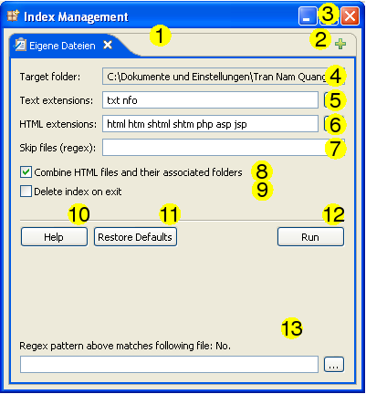

Opções

- Tab bar : Representa uma fila de pastas a serem indexadas.
- Adicionar/Remover : Você pode usar o botão "Adicionar pasta à fila" para adicionar itens à fila e os botões de fechar para remover itens da fila. Cada item da fila pode ser configurado separadamente utilizando os comandos abaixo da barra.
- Fechar esta janela : Ao clicar neste botão irá fechar esta janela e abortar o processo de indexação, se houver um.
- Pasta Alvo : O caminho da pasta exibida atualmente.
- Extensões de Texto : As extensões dos arquivos que devem ser indexados como texto simples, separados por espaço. Os valores típicos são: c, cpp, log, java, py. No caso de conflitos com extensões de arquivos existentes e as definidas pelo usuário, será dada maior prioridade às definidas pelo usuário. Para obter uma lista de extensões de arquivo , clique no botão "..." .
- extensões HTML : As extensões dos arquivos que devem ser indexados como documentos HTML. Esta definição tem prioridade mais elevada do que as definidas pelo usuário. Para obter uma lista de extensões do arquivo relacionada a pasta atual, clique no botão "..." .
- Ignorar arquivos : Uma concatenação de expressões regulares. Qualquer arquivo com um nome que corresponda a um destes padrões será excluído da indexação. Para descobrir se o seu padrão corresponde a um arquivo específico, use a ferramenta descrita no ponto (12). Para mais informações sobre expressões regulares, consulte aqui .
- Emparelhamento de HTML : Serve para para combinar arquivos HTML e as suas pastas associadas, tais como "foo.html" e uma pasta no mesmo diretório chamado "foo_files". Para mais informações, consulte aqui .
- Apagar índice ao Sair : Exclua os arquivos de índice para essa pasta depois que o programa for finalizado. Ativando esta opção permite que você crie "índices temporários", um conceito relacionado à integração de sistemas .
- Ajuda : Abrir este documento em um navegador da web.
- Restaurar Padrões : Restaurar as opções padrões de indexação.
- Executar : Este botão diz ao DocFetcher que você terminou a configuração deste item da fila e que está pronto para o processamento. Note que este botão só define a 'execução' para este item, e não para outros itens na fila.
- Verificação de Expressão regular : Esta pequena ferramenta verifica se o padrão determinado no campo de texto "Ignorar arquivos" coincide com o arquivo especificado aqui.